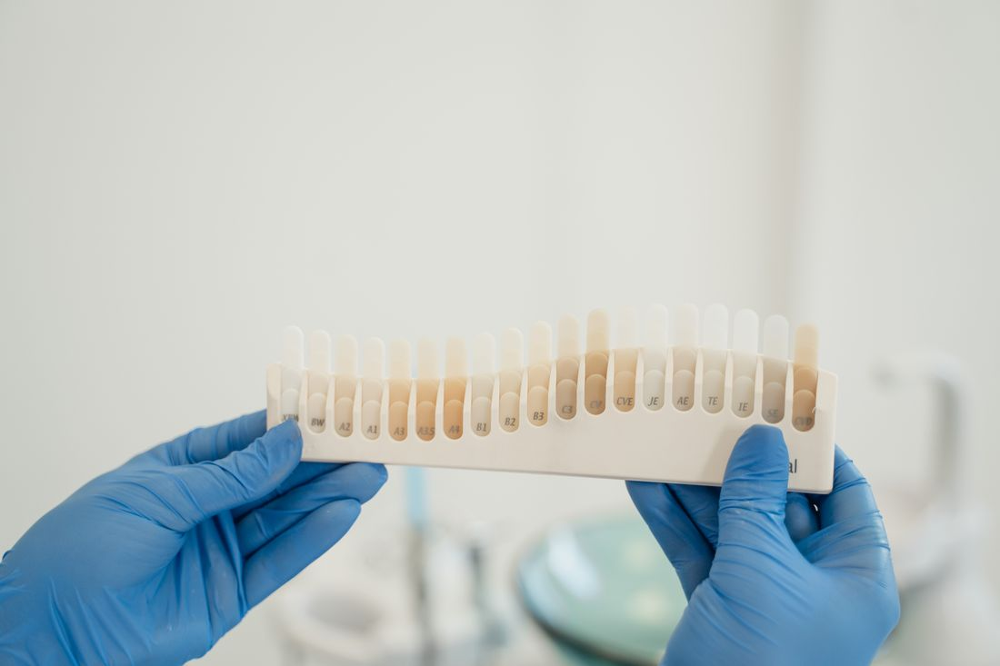
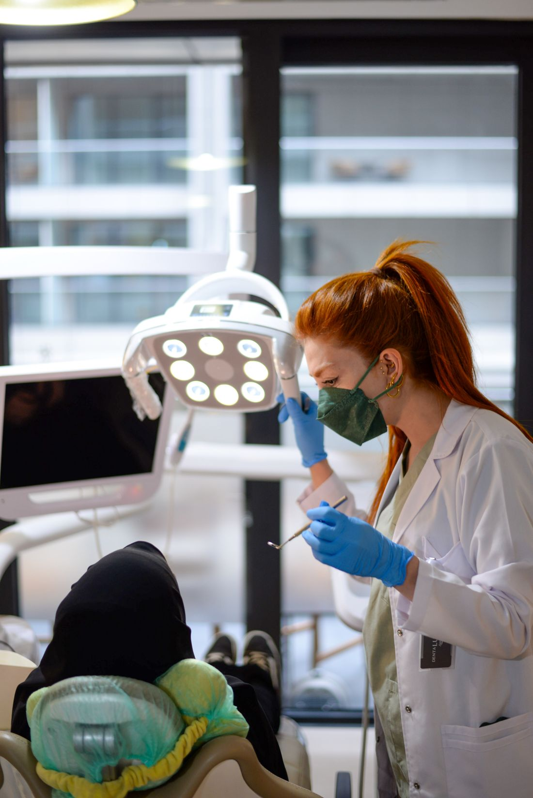

تناسق الابتسامة01
طب أسنان عام وتجميلي بأيدٍ أمينة. آلاف المرضى اختارونا، وتقييم 5.0 الكامل يحكي ثقتهم بنا. نحن قريبون منك في جبل الحسين قرب مستشفى الكندي.

من العناية اليومية حتى الابتسامة التجميلية — نوفّر كل ما تحتاجه تحت سقف واحد، بدقّة واهتمام.
تنظيف وتلميع وفحص دوري للثة والأسنان للحفاظ على ابتسامة صحية ومشرقة.
حشوات بلون الأسنان الطبيعي تعالج التسوّس وتعيد للسن شكله ووظيفته بمظهر غير مرئي.
ترميمات خزفية متينة وطبيعية المظهر لتعويض الأسنان التالفة أو المفقودة بثبات يدوم.
تبييض آمن وفعّال يضيء ابتسامتك عدة درجات في جلسة مريحة ونتائج واضحة.
علاج عصب دقيق وخالٍ من الألم ينقذ السن المصاب ويحافظ عليه بدلاً من خلعه.
ألم مفاجئ أو كسر؟ نستقبل الحالات الطارئة بسرعة لنخفّف ألمك في أقرب وقت.
لمحات من أجواء العيادة والعناية التي نقدّمها لكل مريض.




الصور المعروضة نماذج توضيحية تعكس أسلوب العناية والنتائج المتوقَّعة.

احجز موعدك الآن عبر واتساب أو اتصل بنا مباشرةً — فريقنا جاهز للرد عليك وتأكيد موعدك.